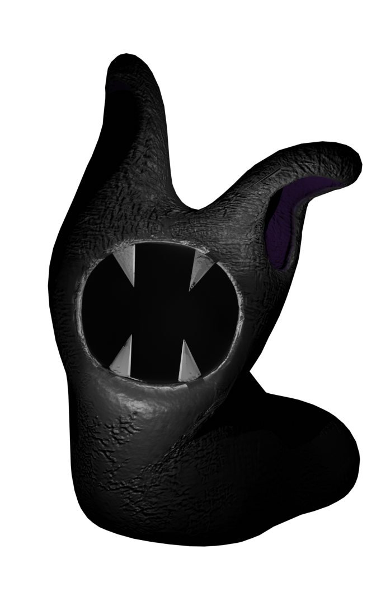
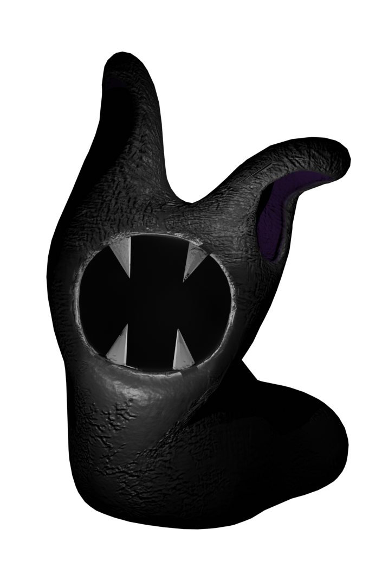

Garten Of Banban: персонажи и их описание
"Для родителя, ищущего своего ребёнка, время - дело тонкое"
Начнём с малого: что такое Garten Of Banban? Garten of Banban — игра от компании Euphoric Brothers, разработанная для платформы PC. Проект совмещает в себе такие жанры и элементы, как логическая и симулятор. Дополнительно игроки выделяют такие особенности игры, как хоррор, для одного игрока, от первого лица и мультипликация. Игра рассчитана на одиночное прохождение, многопользовательские режимы не предусмотрены.
Персонажи:
Банбан - также известный как Дьявол, Усман Адам и Случай 6, является главным талисманом детского сада Банбана и был союзником игрока до его смерти от рук Непослушных Монстров.
Банбалина - Банбалина Т. Тимаут-Девилсон, или просто Банбалина, также известная как Учительница и Кейс 7, - воспитательница-Талисман, созданная Детским садом Банбана, которая предана своей работе учительницы и станет крайне нетерпимой к плохим ученикам. Изначально она была создана, чтобы помогать Банбану успокаиваться и быть учителем для детей, но с ней стало трудно работать из-за ее агрессивного поведения, из-за чего ее не одобрили для презентации.
Птица Тарта - Птица Тарта выглядит идентично птице Опила, за исключением того факта, что он мужчина и имеет другую цветовую гамму. Его тело голубое, а крылья, ноги и клюв алые.
Птица Опила - Опила Бёрд, также известная как Птица и Случай 10, является главным персонажем "Сад Банбана". Она появляется как главный антагонист Garten of Banban, возвращающийся антагонист в Garten of Banban II и III, и второстепенный персонаж в Garten of Banban IV и VI.
Цыплята Опилы и Тарты - Птенцы Опилы - это милые цыплята. Пятеро из них выглядят как миниатюрные птички Опила, в то время как одна немного отличается. У цыпленка, о котором идет речь, голубой окрас с красными вставками на когтях, крыльях, клюве и пучке перьев на макушке головы. Это потому, что отцом цыплят Опилы и Тарты является Птица Тарта, голубого цвета с красными акцентами.
Шериф Тодстер — тритагонист хоррор игры 2023 года «Сад Банбана».
Он — талисман детского сада Банбан, превращённый в живого монстра, представляющего собой антропоморфную двуногую жабу с западным акцентом.
Шериф Тодстер обладает грубыми силами, высоким интеллектом, мастерством рукопашного боя, а также навыками создания ловушек и знаниями.
Королева Баунселия - Кейс 14, также известная как Королева Баунселия и the Queen , является талисманом и правительницей андеграунда. Она сблизилась с шерифом Поганкой после того, как приютила его, и позволяет ему ловить "преступников" и удерживать их в своем королевстве. Когда Шериф захватывает Родителей и представляет их королеве, она начинает помогать им искать их ребенка.
Мистер Кабоб - металлический робот, похожий на манекен, с косоглазием, двумя металлическими перекладинами вместо рук и двумя колесиками вместо ног. Есть веревки, которые помогают поддерживать мистера Человека-Кабоба в качестве рук. Он будет имитировать Банбана, если вы наденете на него праздничные шляпы Банбана.
Набнаб, Изображения Набнаба показывают, что он прячется с поднятыми вверх руками в угрожающей материи, у него ярко-синяя кожа и однотонная праздничная шляпа.
Набналина, Набналина внешне почти идентична Набнабу. Как и он, она четвероногий паукообразный монстр с тремя глазами и большой пастью, полной острых зубов. Однако, ее кожа черная, а не синяя, как у Набнаба, как у Банбалены, и у нее нет языка. Она носит зеленый бант, который спускается с левой стороны ее головы.
Слоу Селин - Ее длинные, упругие ножки глаз комично выпирают, увенчанные выпуклыми глазами, которые кажутся неестественно большими для ее фигуры. Тревожная ухмылка, широкая и землистая, рассекает ее лицо, обнажая ряды заостренных квадратных зубов. Ее спиралевидный панцирь, более глубокий оттенок желтушно-желтого, выглядит почти мультяшным в своем преувеличении. Джамбо Джош - зеленое, мускулистое существо, отдаленно напоминающим четвероногое, с четырьмя короткими ногами, двумя расширяющимися предплечьями, заканчивающимися похожими на рукавицы кулаками, и довольно выпуклой головой. На его голове два выпученных глаза и озорной рот без языка, сложенный в широкую ухмылку.
Джамбо Джош - зеленое, мускулистое существо, отдаленно напоминающим четвероногое, с четырьмя короткими ногами, двумя расширяющимися предплечьями, заканчивающимися похожими на рукавицы кулаками, и довольно выпуклой головой. На его голове два выпученных глаза и озорной рот без языка, сложенный в широкую ухмылку. Стингер Флинн - оранжевая медуза с одним глазом в середине колоколообразной головы, соединяющимся с 6 выдвижными щупальцами. Четыре его щупальца опущены, в то время как два других подняты по бокам головы в дружелюбной поз
Таматаки и Чаматаки, Таматаки - черепаха, голова и лапы у нее цвета морской пены. Чаматаки - это сторона хамелеона, имеющая более темный бирюзовый оттенок, за исключением языка цвета морской пены и областей вокруг глаз. Они соединены панциремТаматаки, похожим на панцирь бирюзовой черепахи.
Джестер, Джестер появляется в виде гуманоидного существа, разделенного на две части. H- правая сторона нахмуренная, гофрированная и индиго, за исключением зеленой стопы и области вокруг глаза. Его левая рука улыбчивая и гладкая, с теми же цветами, поменянными местами.
Киттизавр - гибрид кошки и динозавра с пустыми белыми глазами и острыми зубами. Ее мех коричнево-оранжевого цвета, а лапы, рот и когти белые.
Сэр Дададу - Сэр Дададу напоминает темно-серую пиявку в деловом костюме и фиолетовом галстуке. У него нет ног, но на нем фиолетовые перчатки. У него полая серая голова с углублением темно-красного оттенка и восемью острыми зубами.
Пиявки - это дети королевы Баунселии. На ее изображении Они изображены внутри сумки королевы Баунселии, где вы не можете разглядеть ничего, кроме их глаз, из-за того, насколько темно в ее сумке. В Саду Банбана IV, как только Джестер рассмешит королеву, им удается сбежать, потому что, по ее словам, если она когда-нибудь засмеется, Они вырвутся из ее сумки.
Стингер Флинн - оранжевая медуза с одним глазом в середине колоколообразной головы, соединяющимся с 6 выдвижными щупальцами. Четыре его щупальца опущены, в то время как два других подняты по бокам головы в дружелюбной поз
Таматаки и Чаматаки, Таматаки - черепаха, голова и лапы у нее цвета морской пены. Чаматаки - это сторона хамелеона, имеющая более темный бирюзовый оттенок, за исключением языка цвета морской пены и областей вокруг глаз. Они соединены панциремТаматаки, похожим на панцирь бирюзовой черепахи.
Джестер, Джестер появляется в виде гуманоидного существа, разделенного на две части. H- правая сторона нахмуренная, гофрированная и индиго, за исключением зеленой стопы и области вокруг глаза. Его левая рука улыбчивая и гладкая, с теми же цветами, поменянными местами.
Киттизавр - гибрид кошки и динозавра с пустыми белыми глазами и острыми зубами. Ее мех коричнево-оранжевого цвета, а лапы, рот и когти белые.
Сэр Дададу - Сэр Дададу напоминает темно-серую пиявку в деловом костюме и фиолетовом галстуке. У него нет ног, но на нем фиолетовые перчатки. У него полая серая голова с углублением темно-красного оттенка и восемью острыми зубами.
Пиявки - это дети королевы Баунселии. На ее изображении Они изображены внутри сумки королевы Баунселии, где вы не можете разглядеть ничего, кроме их глаз, из-за того, насколько темно в ее сумке. В Саду Банбана IV, как только Джестер рассмешит королеву, им удается сбежать, потому что, по ее словам, если она когда-нибудь засмеется, Они вырвутся из ее сумки.
НЕ мутанты: Банбан, Банбалина, птица Тарта, птица Опила, цыплята Опилы и Тарты, Шериф Тодстер, Королева Баунселия, Мистер Кабоб, Набнаб, Набналина, Слоу Селин, Джамбо Джош, Стингер Флинн, Таматаки и Чаматаки, Джестер, Киттизавр, Сэр Дададу. Мутантами являются только пиявки.
Антагонисты 1 части: Джамбо Джош, Птица Опила.
Антагонисты 2 части: Набнаб, Слоу Селин, Джамбо Джош, Банбалина.
Антагонисты 3 части: Стингер Флинн, Джамбо Джош, Таматаки и Чаматаки, адский Банбан.
Антагонисты 4 части: Таматаки и Чаматаки, Джестер, Киттизавр, Набнаб.
Антагонисты 6 части: Сэр Дададу, Пиявки.
Протагонисты 1 части: нет.
Протагонисты 2 части: Банбан, Птица Опила.
Протагонисты 3 части: Банбалина, Мистер Кабоб, цыплёнок Опилы, Птица Опила, Птица Тарта.
Протагонисты 4 части: Цыплёнок Опилы, Шериф Тодстер, Королева Баунселия, Банбан, Мистер Кабоб.
Протагонисты 6 части: Джестер, Банбан, Мутант Набнаб, Шериф Тодстер, Банбалина, Стингер Флинн.